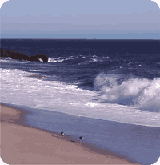

|
 | |  |
| 
Welcome to the Aquatic Testing Laboratories website. We are a private
laboratory dedicated solely to providing our clients with quality aquatic
toxicity testing. We accomplish this by our vigorous QA/QC program,
culturing most our test organisms in-house, and providing our clients with
prompt, individualized service. Aquatic Testing Laboratories specializes in
conducting a wide variety of aquatic toxicity testing ranging from simple
acute bioassays to more sophisticated chronic toxicity tests examining
toxic effects upon sensitive life stages. Our staff has over 30 years of
experience in this field, testing a wide variety of samples using both fresh
and salt water test organisms, all done with total quality in mind.
| |
 | |  |
| | |
| Aquatic Testing Laboratories
4350 Transport Street, Unit 107
Ventura, CA 93003
Phone: Available Upon Request
Emailed Prefered
Email: jlemay12@pacbell.net | |
| | |
|
| | |
| Download the Chain of Custody form here:
coc.pdf | |
| | |
|
|